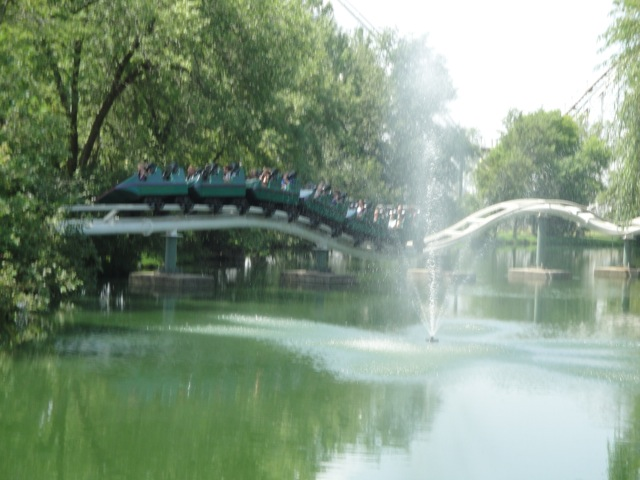
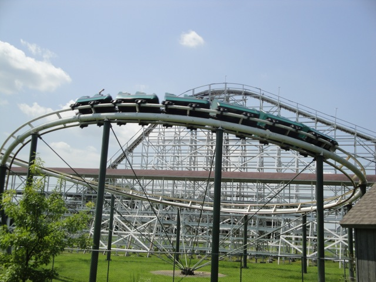

| |
Top 10 Worst Coasters

Welcome to an Incrediblecoasters Top 10 List. When we list stuff, we actually explain why. Or I should say Bottom 10 List since todays topic is the Top 10 Worst Coasters ever built. Now many people in the enthusiast community will complain about the coaster snob. The person who will nit-pick a ride to death and say "Oh, this kickass ride sucks. I don't like the way the sun glares on it. It should've had this teeny insignificant X factor built in, blah blah blah." And yeah, those type of people are annoying, but they are pretty rare. But then there are the enthusiasts on the opposite end of the spectrum. The enthusiasts who can not criticize any ride for any reason. They have this attitude of "I am a coaster enthusiast and I love roller coasters. Therefor, I love everything that is a roller coaster. Yeah, some may be better than others, but as long as its a roller coaster, it can not suck and must be fantastic." Yeah, these people are also very rare, but man do they piss me off. I'm sorry, I know everyones entitled to their own opinion and all, but that attitude just really really really pisses me off and it pisses me off for several reasons. First off, I'm against any sort of blind following. And yes, if you approve of something for an arbitrary reason such as I must like this since its a coaster, and therefor must be great, you are blindly approving of something. Second of all, its an insult to coasters that are actually good. Imagine a food critic who was a Pizza Enthusiast say "I love Pizza. Therefor, any pizza that anyone ever makes is delicous. I don't care if your pizza is made from sh*t and covered in mold, its a pizza, and therefor, delicous." Yeah, you'd never take any of their pizza reviews seriously just as I never take anything any coaster enthusiast with this attitude says seriously. And finally, if people are cool with sh*t, then parks will buy the cheap sh*t since its cheap, and people like it and will eat it up. Yeah, yeah. Coaster Enthusiasts don't have any effect since we're not the main demographic and that the GP has way more power, but still. And I'm here to completely retaliate and fight against this idea by exposing the 10 worst coasters I've currently been on (and I've been on a lot). So get ready. Bow your head in shame and bend over cause I'm about to rip you a new one. These are the 10 Worst Coasters Ever.
 
#10.

Son of Beast @
Kings Island
Kings Mills, Ohio, U.S.A
Now I know that some people liked this ride, though most of the enthusiast community despised this ride. And yeah. This ride was a peice of sh*t. Now the General Public when this ride first opened LOVED this ride. But thats only because of two reasons. 1, it was HUGE!!! And 2, it was a WOODIE with a LOOP!!!! Now in 2006, there was some accident and the for the 2007 season, they took out the loop on Son of Beast. Now I rode it in 2008, so I missed it with the loop. And from what I heard, the loop was the best part of the ride. But people still loved it for reason #1. It was HUGE!!!! Now I will admit that the first drop on Son of Beast was actually fun. But after that, it was all sh*t. Now everyone keeps hating it because of how painful it was. With the old trains, I'm guessing that it was MUCH MUCH worse since I rode a ride that had these trains that you will see much higher on the list. But with the new trains, it wasn't TOO bad. It was less "OW!! OW!!!! THIS IS KILLING ME!!!!!!" as much as it was this awkward funny uncomfortable vibrations that you literally felt going through you. But what I really despised about Son of Beast was just how bad the layout is. ITS BORING!!!! IT DOES NOTHING EXCEPT GO IN STUPIDASS CIRCLES!!!!! Its just helix after helix after helix with rough vibrations you feel going through you. I go into far more details about this in my Son of Beast Review. But yeah. If its uncomfortable and doesn't do anything, then there's something seriously wrong with your ride. But at least you'll never get to know. There was another accident in 2009 where some woman claimed she got brain damage from the ride. I'm pretty skeptical about her claims, but they closed Son of Beast. The ride was just announced a few days ago that it would be torn down in the winter. And I won't miss it a bit. It was uncomfortable and boring. Not two qualities you want on a roller coaster.
 
#9.

Mean Streak @
Cedar Point
Sandusky, Ohio, U.S.A
Located right next to one of my favorite coasters of all time, Maverick, this thing is a real emberassment to Cedar Point and its roller coaster collection and shouldn't be seen with Cedar Point's other rides, let alone be the next door neighbor to Maverick. I know recently, they got rid of Wildcat and Disastor Transport. Disastor Transport was meh, and while I don't really care about Wildcat, the credit whore inside me still just wishes that I would've gotten it so I could've added it to my count. But I'm mostly surprised that Cedar Point decides to remove two coasters, and NEITHER OF THEM ARE MEAN STREAK!!!! Seriously Cedar Point!!! Ok, Disaster Transport was nothing special. It was boring, it was meh, but it was still better than this peice of sh*t!!!! So what exactly is wrong with this ride? Well, pretty much everything that was mentioned with Son of Beast. IT'S UNCOMFORTABLE AND BORING!!!!! But this doesn't have ANYTHING to it. At least Son of Beast had a decent pre-lift and a fun first drop. This doesn't even have that. The first drop is trimmed so there's no speed and the rest is just slow shuffling. Hell, not even the General Public likes this ride!!! This was the only ride at Cedar Point with a walk on wait. I mean, I waited longer for the Derby Down than for this thing. But maybe Mean Streak will be the next coaster at Cedar Point to get the axe, or maybe they're planning on giving it the Texas Giant Treatment. I know that was a similar ride to Mean Streak, then they redid it and people are giving it super high reviews. I'll be over there next year to see for myself if these reviews of the New Texas Giant are accurate. So hopefully Cedar Point will give it some love like that, but until then, Here's a dog poop bag for Maverick. Someone made a mess next door to you.
 
#8.

Grizzly @
California's Great America
Santa Clara, California, U.S.A
Now if there's any ride that the enthusiast community hates, it would be this one. Grizzly is definetly one steaming pile of sh*t. And now the question of why so begins. All right. "Why?" Yep. Its those exact same two reasons again. Yep the same two that plague Mean Streak and Son of Beast. Its uncomfotable and boring. But mostly boring. HOLY CRAP!!!! THIS RIDE IS SO DAMN BORING!!!!! IT LITERALLY DOES NOTHING!!!!! IT IS SLOWER THAN A SNAIL!!!! KIDDY COASTERS SMALLER THAN ME ARE MORE THRILLING THAN THIS GIANT SLEEPING PILL!!!!!!!! Oh wait, did I say that its a sleeping pill? Yeah, its not. It would be if it had really cozy seats with nice velvet cushioning. But unless you enjoy sleeping in a hard plastic chair that shuffles and pokes you in the sides, then this is not a sleeping pill for you. Yeah, Grizzly is not a comfortable ride. Now its not that rough. I know that I have a deep love for LOTS of rides much rougher than this. But this roughness bothers me because at least on other rides, the roughness is either part of the wildness or can be overlooked by being distracted by something great. Here, not so much. It's sort of like the difference between getting a small cut by playing with friends and getting a small cut while cleaning the sh*t off a toilet seat. Neither really hurt, but if you get the cut playing with friends, "Big Whoop!!! Lets have more fun by doing more crazy stupid sh*t!!!!" Wheras if you get the cut while cleaning the toilet seat, you notice the pain a lot more and your bad experience just got worse. Yeah, thats a good example of Grizzlys roughness. Now a lot of people will say that boring doesn't equal bad. I'm sorry, but roller coasters are designed to be thrilling and fun. If your design fails to do this, then yeah. You're a horrible roller coaster designer. You clearly have designed a horrible ride as it completely fails to do what it was intended to do.
 
#7.

Anaconda @
Walygator Parc
Maizières-lès-Metz, Lorraine, France
Yep, another uncomfortable and boring woodie over here. As you can tell, I really don't like these types of rides, and this sure as hell is a bad one. Anaconda, or as I like to call it, French Grizzly is a HORRIBLE HORRIBLE COASTER!!!!!! It seriously is just like Grizzly @ California's Great America. They pracically feel like clones!!! Like Grizzly, the ride is so slow that the continents are drifting away at faster speeds than this hunk of sh*t. And like Grizzly, its fairly uncomfortable with some shuffling going on and some pokes to the side. So they're practically the same ride. So it seems like they should be tied. Well there is one thing about Anaconda that makes it worse than Grizzly. You notice how Anaconda has much bigger drops and more drops and less weird straight shuffle track? Yeah, unlike Grizzly, Anaconda was not designed to be super slow and boring. The ride does in fact have speed. So great. Problem solved right? Except no. That makes it MUCH MUCH worse from what I've heard. I heard from people who rode it before they slowed it down that it BEAT THE EVER LIVING SH*T OUT OF YOU!!!!! So to deal with the complaints of everyone coming off in pain, they slowed it down to a crawl so it'd stop hurting everyone. You heard it right. They have it bore you to death to prevent it from beating you to death. They destroyed it to prevent it from killing you. Talk about a design failure.
 
#6.

Flashback @
Six Flags Magic Mountain
Valencia, California, U.S.A
All right, we've now passed all the boring and uncomfortable horrible coasters. Now that we're into the even worse coasters, we're gonna start talking about the ones that physically try to murder you. And man, did Flashback ever try. This is a coaster that despite being located at my home park, I was lucky to ever get the credit. I only saw it run twice in my entire life. The first was before I was a coaster enthusiast and I wasn't interested. And then the second time, I decided to hop on. I should've known that it was going to suck when it was PACKED that day to the point where we were parking at the end of the overflow and Revolution had a 45 minute wait, but Flashback was a walk on despite those crowds. That should've warned me to stay away and that it was horrible. But I rode it anyway. Its been so long since I rode that its hard to remember. All I remember is pain, lots of pain, lots of screaming, and all of us sitting on a bench for 10 minutes afterward to recover. Now Flashback is gone. Long long gone. You'd never even guess that anything was ever there nowadays. But it was there, though it got taken out in Early 2008. And before that, it was just sitting there SBNO. In fact, the last reports I ever heard of it running were in April 2003, which is coincidentally when I rode it. So its entirely possible that I rode Flashback on its last day of operation. But yeah. Nobody misses it. It was rejected by Six Flags Great America and Six Flags Over Georgia before heading to Six Flags Magic Mountain before being turned into scrap metal. So if you see anything made of metal recently, spit on it, because it could possibly contain reminents of this horrible monstrosity.
 
#5.

Ninja @
Six Flags St. Louis
Eureka, Missouri, U.S.A
Yeah. Its time for another super painful coaster that tries to beat you to death. This one would be Ninja @ Six Flags St. Louis. It acts like a Ninja, just sitting there harmlessly, waiting to be ridden so you can have fun or at least just brace another crappy Vekoma and add it to your count. But WHAM!!!!! THIS THING IS HORRIBLE!!!!!! I can not think of any positive qualities about this ride. I mean, at least Flashback was unique. But this, this is just horrid. You bang your head on every single turn. Every single bump, every single move is a nice big SLAP on your head. Its all horrible. The Sidewinder gives you a nice SMACK. The corkscrews keep spanking your head, mistaking you for a spoiled brat, this for a time era where we should all spank kids, and your head for your ass. But to add insult to injury, its not even that interesting. So even if it didn't try to kill you, it'd still suck as it has a horrible layout and doesn't really do anything. Just some slow inversions, some clunky turns, and that clunkiness results in PAIN!!!! SERIOUS SERIOUS PAIN!!!!!!! Bring Advil. You'll need it.
 
#4.

Wild Beast @
Canada's Wonderland
Vaughan, Ontario, Canada
Yeah. The deeper we go into this list, the worse and worse they got. And man, does it ever get bad here. If you thought Flashback and Ninja hurt, they were just softening you up so Wild Beast could REALLY take a sh*t on you. I know that in my Canada's Wonderland Update, one of my captions said the following. This thing is slower than Mean Streak, Rougher than sleeping on a broken glass bed, and more disgusting than sex with the Evil Millenium Force Ride Operator." And yeah, the first two statements are totally true. It really is slower than Mean Streak (which is saying something), and rougher than sleeping on a bed made of broken glass. As for the last statement, I'm sick of talking about that topic. Just read my Wild Beast review for my rebuttal of that last statement. I'm sick of talking about that. Anyways, onto Wild Beast. Yeah, you know Grizzly, the ride that got the #8 spot? Yeah. Picture that ride, all the slowness and all the boringness. Yeah, its horrible. Now add in the ride shaking you the way a breeder shakes a baby with what feels like the ride trying to cheese grate your ass onto the ground. Yeah. That gives you a pretty good idea about whats wrong with Wild Beast. All the time it would spend boring you is just the time Wild Beast gives you to nurse your injuries before it just f*cks with you again. Stay the hell away from this ride. Just stick to Behemoth, Leviathan, or hell, ANYTHING is better than Wild Beast!!!!!!
#3.

Bandit @
Movie Park Germany
Bottrop, North Rhine-Westphalia, Germany
Yeah. They're just getting worse and worse. You keep thinking that oh, a coaster can't get any worse than worse. What could be worse than Wild Beast? Well, let me introduce to this monstrosity known as Bandit. Remember when I mentioned that another ride I rode used the old Son of Beast Trains, yep. This ride still uses them, and it is horrible. Just thinking of these trains on Son of Beast sends shivers down my spine. This ride is so rough and so violent that you'd think that its a leftover reminent of Nazi Germany that the park just decided to keep for the sake of money despite the ride feeling like it was designed for a Concentration Camp. Not only does this ride shiver, shake, and smack, but it also has headbanging. Can you imagine? Headbanging on a wooden coaster!!!! Now granted, this is not typical headbanging. The sides of your head are safe. Bandit prefers to get you through the back of your head. Your head bobs back and forth, and when it goes back, it SMACKS against a rock hard headrest. No plastic, no cushioning, just your head going SMACK SMACK SMACK while your brain is most likely doing the same thing smacking your skull. So lets see, you've got the head smacking into the plastic rock hard headrests, you've got constantly shuffling everywhere, jackhammering everywhere, and a giant lap bar that squeezes the blood out of your legs. Yeah. This sounds awful. I bet you all can't wait for the amazingness of the next two horrid rides.
 
#2.

Dragon @
Adventureland
Altoona, Iowa, U.S.A
Ok, hold on a second. I'm gonna have to go get some advil because just talking about this ride is going to give me a big migrane. Yeah. Its really that bad. Dragon is one of the most mysterious coasters on the planet in the question of how the hell such innocent and harmless elements can be so monsterous and brutal and painful. The bunny hops out of the station. Just tiny little harmless dips. That can't possibly hurt you. That is until you ride Dragon. I mean, at least all the other rides pre-lifts and lifthills don't hurt. You're pretty safe on those rides until the first drop. Not Dragon. The ride is not very long, so it must take advantage of every precious second that the ride has to try and crack your head open like an egg to make a breakfast of scrambled brains. I mean, this is stuff that normal kiddy coasters do, and its causing some nasty headbanging just on these itty bitty bumps. And once we actually, go down the main first drop and really gain speed. Ouch, just ouch. Its gonna hurt. Its really gonna hurt. These restraints are not soft at all. They're pretty damn hard and plastic. And overall, this ride just flat out sucks. Even without the pain, it'd still suck. Its got a small first drop, two loops, a helix, and yeah. Thats pretty much it. It couldn't even do anything. I would complain about how short the ride is, but with this ride, the sooner it ends, the better. The only reason its memorable at all is all the pain. Yeah. Its just flat out awful.

#1.

Gouderix @
Parc Asterix
Plailly, Picardie, France
Yeah. With Dragon being so wretched and horrible, it seems hard to top. Thats what I thought after I first got off Dragon. "I don't think anythings gonna top this. This is truely horrible." Well, 2 years later, I went to Europe and rode this nightmare coaster. And yeah. Just like Dragon, it is a monster in headbanging. The ride is literally doing a drumroll with your head. Its just constant pain from first drop to the brake run. And yeah. Just look at it. Yeah, its a beautiful looking ride, but at the same time. Do any of those elements seem natural? They practically seem like they were designed to hurt you. Like no coaster should ever have any of these elements. But for as horrifying as the headbanging is, its not what made it even worse than Dragon, as frankly, I don't think its possible to beat Dragon for headbanging. Gouderix matches it, but thats as all you can do. Now to top Dragon, Gouderix will hurt you in places most rides won't ever think of hurting you. It goes for your arms as well. I mean you always hear about headbanging. You hear about head shaking. You hear of shuffling and jackhammering. You even hear of the occasional testicular pain, still have yet to ride a coaster to cause that (the key word being coaster). But I have never once heard of anyone complaining about arm pain. And this thing f*cking murdered them. I mean, my headache from the headbanging was completely gone within 10 minutes. My arm still hurt from Gouderix when I came back to America. It hurt me that bad. And luckily, I managed to take a POV of this horrible ride, so I always show it to myself if I ever say "Was it really as bad as I remember or am I just exxagerating?" *watches my own POV* Yeah, my memory is currently correct. So you'll all get to laugh at me or cringe with pity when you see the video of me on Gouderix when I eventually get around to uploading it to Youtube. Its a very clean G-Rated POV. =) But thats not even the astonishing part. I knew that it was going to be bad since its always had a reputation as one of the worst coasters in the world by other enthusiasts. What baffled me is seeing the three hour line for it. THREE HOURS!!! WHO THE F*CK WANTS TO WAIT THREE HOURS TO HAVE THEIR HEAD DRUMROLLED AND THEIR ARM ATTEMPTED TO BE BROKEN!!!!! I luckily had a fastpass so I didn't have to wait to suffer, and I'll give you a fastpass and just hurt you right now if you want so you don't have to wait three hours for Gouderix to do it for you. But yeah. Seeing that line really makes me question the intellenge of the French. OK. This is the pot calling the kettle black. At least the French didn't elect an orange dumbass fascist manchild. Hey, maybe they're just in it for gloating rights. I mean, how many people will believe you when you claim you've ridden the worst coaster on the planet. Nah, still not worth it.
 
So now I'm sure you know what you're thinking. "Wow. That was the list. That is so wrong." Well no. First of all, this list can not be entirely accurate since I haven't ridden every single coaster in the world, so until I do, this list will never truely be accurate. And new ones will be made, so technically, no list will last forever. But really, do you want this list to change? This is one Top 10 List I hope stays this way forever. I get very excited when I have to update my Top 10 Wooden Coasters List, or my Top 10 Steel Coasters List, or my Top 10 Theme Parks List. Because something amazing came along and beat what I had previously considered to be the best, meaning I now know that even better stuff exists and that the best is even better than I thought. However, I really hope this list just stays frozen like this forever. Because you saw how horrible all those coasters are. Do you really want more horrible rides to be built? Do you really want to see a new Dragon or Gouderix? I want the new coasters I experience to be better!!! Not worse!!! Thats just backwards wishing!!! Now if you're someone who likes any of these coasters and are complaining about how I completely shat on your favorite ride? Well, first of all, It's just my opinion. If you like Dragon, or Wild Beast, or Bandit, or Gouderix, or any of these, fantastic. Love it for all I care. Just never expect me to take any roller coaster advice from you ever. =) Second of all, you're probably a sado-masachist. Third, this would be a very underrated coaster for you as none of these are popular with other enthusiasts. My picks aren't that shocking to most enthusiasts. Believe it or not, I do know someone who actually liked Dragon. So yeah. If you are ever at any of these parks, beware.
|